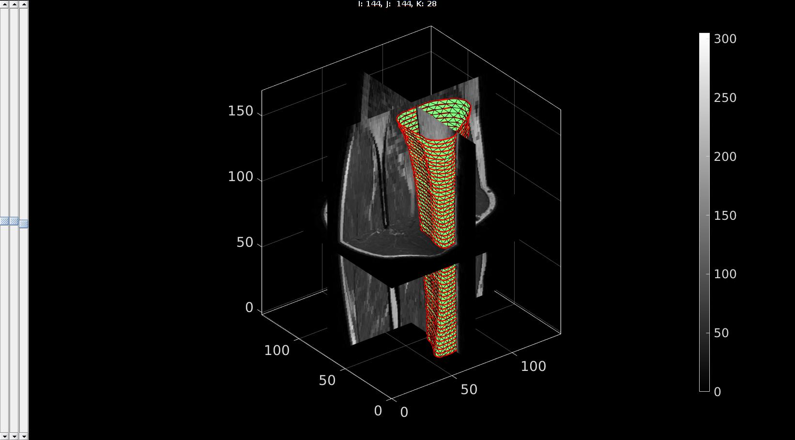

contourRegularise
Below is a demonstration of the features of the contourRegularise function
Contents
clear; close all; clc;
Syntax
[X,Y,Z]=contourRegularise(Vcs,n,interpMethod);
Description
This function converts the contour data in Vcs (cell containing 3D polygons e.g. as derived from segmentation with imx) to a grid format whereby the 3D coordinates are resampled in the form of a set of 3 nxm matrices (where m is the number of contours, and n is the number of desired points). The input n defines the number of points to resample each contour with, and interpMethod defines the interpolation method. The interpolation method can be any MATLAB supported polygon interpolation method (such as linear and pchip). If interMethod is set as a scalar between 0 and 1, then a cubic smoothing spline with this scalar smoothing parameter is used.
Examples
Regularising a contour set
Import image data for this demo
defaultFolder = fileparts(fileparts(mfilename('fullpath'))); %Set main folder pathNameImageData=fullfile(defaultFolder,'data','DICOM','0001_human_calf'); loadNameImageData=fullfile(pathNameImageData,'IMDAT','IMDAT.mat'); IMDAT_struct=load(loadNameImageData); %The image data structure G = IMDAT_struct.G; %Geometric/spatial information v=G.v; %The voxel size M= IMDAT_struct.type_1; %The image data
contourName='imseg_calf_tibia'; pathName=fullfile(defaultFolder,'data','imseg'); %Folder name for contours
Compute levelset
loadName=fullfile(pathName,contourName); load(loadName); %Load segmentation structure Vcs=saveStruct.ContourSet; %Access the contour data
Resample contours
n=25;
interPar='pchip';
[X,Y,Z]=contourRegularise(Vcs,n,interPar);
size(X)
ans =
56 25
Visualize the results as a mesh
[F,V]=grid2patch(X,Y,Z,[],[0 1]); %Convert grid to patch mesh [F,V]=quad2tri(F,V,'a'); %Convert quads to triangles (not required)
Visualize logic image and contours together
%Visualize logic image sv3(M,v); %Open slice viewer for levelset %Visualize contours optionStruct.Color='r'; optionStruct.LineWidth=2; plotContours({Vcs},optionStruct); %Plot contours gpatch(F,V,'gw'); gdrawnow;

GIBBON www.gibboncode.org
Kevin Mattheus Moerman, gibbon.toolbox@gmail.com
GIBBON footer text
License: https://github.com/gibbonCode/GIBBON/blob/master/LICENSE
GIBBON: The Geometry and Image-based Bioengineering add-On. A toolbox for image segmentation, image-based modeling, meshing, and finite element analysis.
Copyright (C) 2006-2022 Kevin Mattheus Moerman and the GIBBON contributors
This program is free software: you can redistribute it and/or modify it under the terms of the GNU General Public License as published by the Free Software Foundation, either version 3 of the License, or (at your option) any later version.
This program is distributed in the hope that it will be useful, but WITHOUT ANY WARRANTY; without even the implied warranty of MERCHANTABILITY or FITNESS FOR A PARTICULAR PURPOSE. See the GNU General Public License for more details.
You should have received a copy of the GNU General Public License along with this program. If not, see http://www.gnu.org/licenses/.